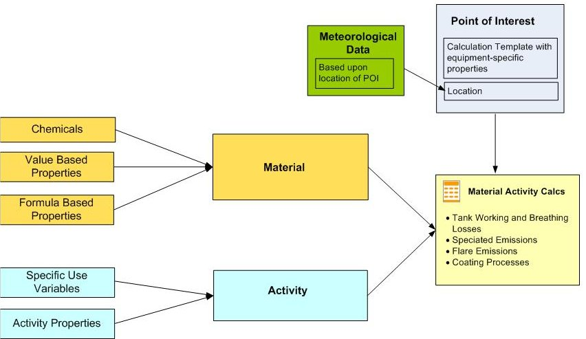

The system components used to set up Material Activity Calculations and the way they relate to each other are shown in the following diagram.
The Manage Materials and Activities user right is required to view or edit materials, chemicals, activities and related components.
The system components are defined as follows.
Material
The material used in an activity. Materials have defined chemical concentrations. They may also have value based properties (VBPs) and formula based properties (FBPs). See Materials.
Chemicals
Chemical components of a material. For each material, the Min, Max and Avg concentration values are specified for the material. See Chemicals.
Material Value Based Properties
Constants (numeric or Boolean) that are properties of the material and which may be used in calculations related to a material. See Material/Activity Fields.
Material Formula Based Properties
Material-specific calculations that are performed previous to the final Material Activity calculation. Material FBPs are defined as Primary, Secondary or Tertiary. There are two types: standard formula based properties and chemical logical formula based properties. See Material/Activity Fields.
Activity
The activity for which usage data will be input. An Activity must have at least one specific use variable (SUV) for data input. An Activity may also include Activity Value Based Properties (AVBPs): numeric or Boolean properties that may be used in a calculation. See Activities.
Activity Value Based Properties
Constant (numeric or Boolean) that are properties of the activity and which may used in calculations.
Specific Use Variables
The variable for which data is input and which triggers the calculation, such as the amount of material used.
Material Activity Calculated Requirement
The monitored requirement, as defined in the system model. See Material Activity Calculated Requirements.
Calculation Template
A calculation template may be used to store factors that need to be used in calculations, such as equipment specifications, dimensions, etc. A calculation template may be applied to a Facility, Unit or POI that has related MACs. The calculation template field values may be used in secondary and tertiary FBPs on a material, as well as Material Activity Calculations and regular Calculated Requirements. Values are available to immediate child requirements (and the materials used by them). See Calculation Templates.
